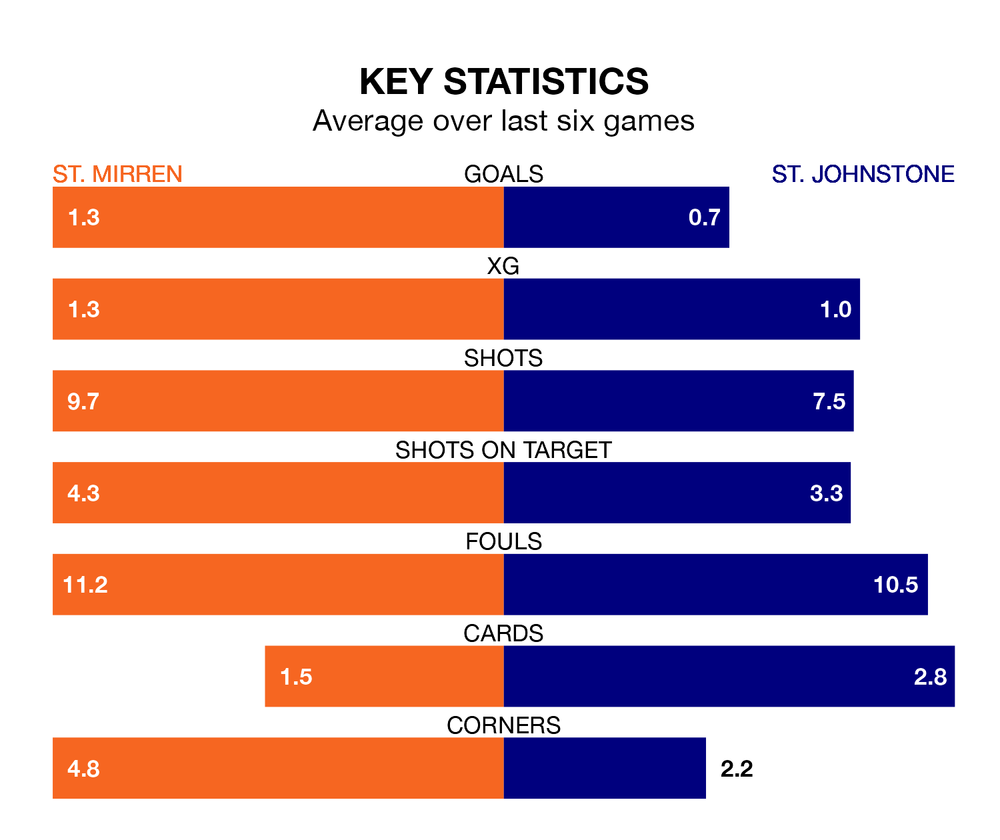

St. Johnstone make the journey to the SMISA Stadium to play St. Mirren on Saturday looking to pick up points to end their three-game losing streak.
St. Johnstone's struggles have left them with five points from their last six Premiership matches, while their opponents have earned nine from a possible 18.
In the last 10 years, St. Mirren and St. Johnstone have played each other on 24 occasions. St. Mirren won six of them, St. Johnstone 11, and they drew seven times.
On average, the Buddies scored 0.8 goals and the Saints 1.0 in those matches.
Their last meeting was on December 6, when St. Johnstone won 1-0 at home.
St. Johnstone are 10th in the table after 26 games, of which they have won five and drawn nine, earning 24 points.
St. Mirren are five places ahead of the Saints in fifth, with 10 wins and five draws putting them on 35 points.
In Zachary Hemming, the Buddies can rely on one of the league's safest pair of hands. He has kept nine clean sheets in his 26 appearances this season in the Premiership.
In the visitors' net, Dimitar Mitov has seven clean sheets in 26 games. He has conceded a goal every 75 minutes, 20% more often than the 87 minutes between goals for Hemming.
With 17 goals in 26 games so far this season, St. Johnstone are the league's second-lowest scorers with 0.7 goals per game. And they are conceding at an average rate, letting in 35 goals at a rate of 1.3 per game.
The home side are also below average scorers, with 1.1 goals per game, compared to a league average of 1.3. They have conceded 1.2 goals per game.
St. Mirren's last match was on February 17, a 1-0 loss against Livingston.
St. Johnstone lost 3-0 against Rangers last time out, on Sunday.
Saturday's match will be refereed by Grant Irvine, who has taken charge of six Premiership games so far this season, issuing two red cards and booking 15 players. He has awarded three penalties.
The last St. Mirren game Irvine refereed was a 3-0 away win against Aberdeen on December 30. He is yet to oversee a match featuring St. Johnstone this season.
Updated: 10:08 (UTC), 23/02/24